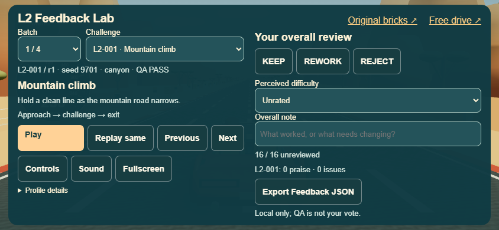
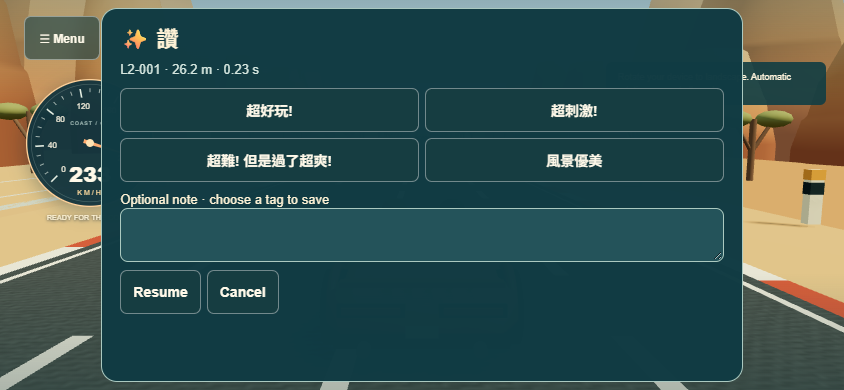
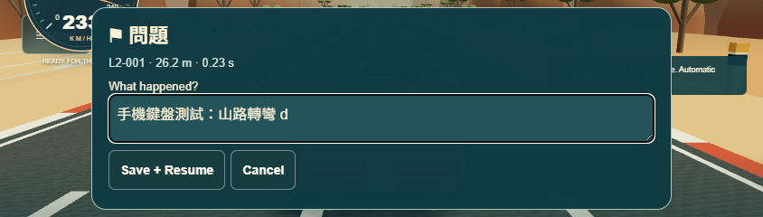

Recorded real-time browser drives, using a test-only driver with the game's existing steering and braking controls. These are technical checks, not human approval. All new human ratings remain UNREVIEWED.
Gameplay videos predate the final menu spacing and status-message placement fix; road geometry is unchanged. See the final menu and feedback captures below.
Play L2 Lab · Drive index · Road/prop scans · Isolated test export


